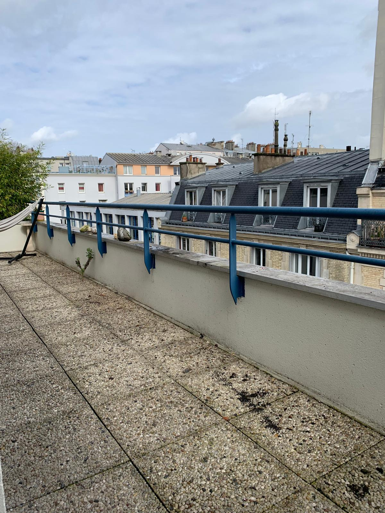
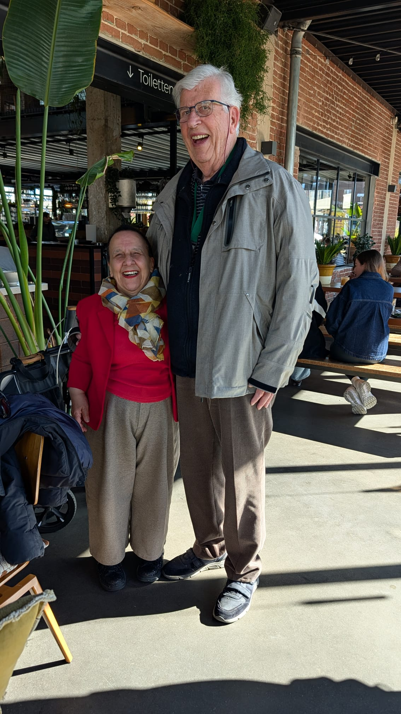
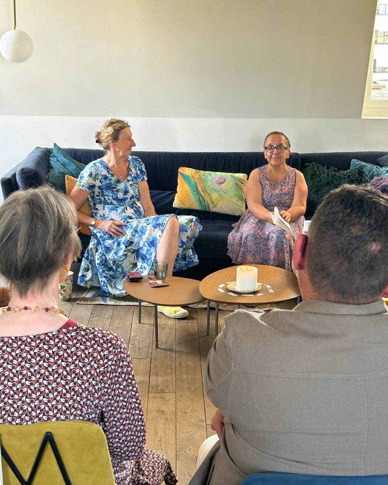
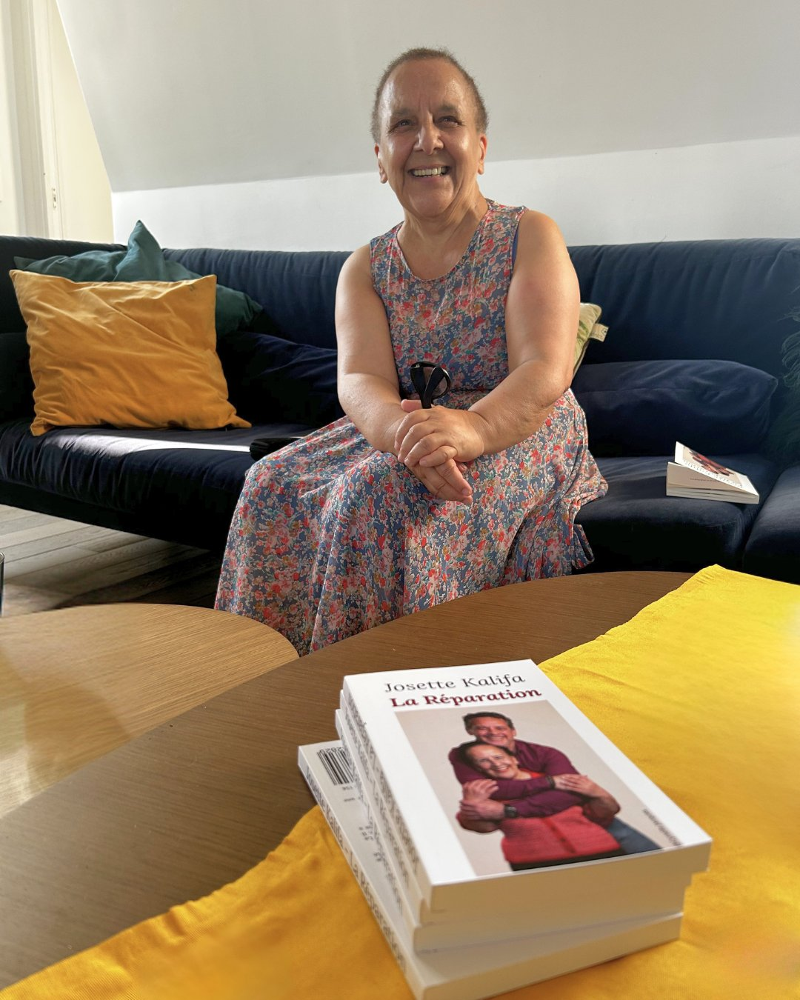
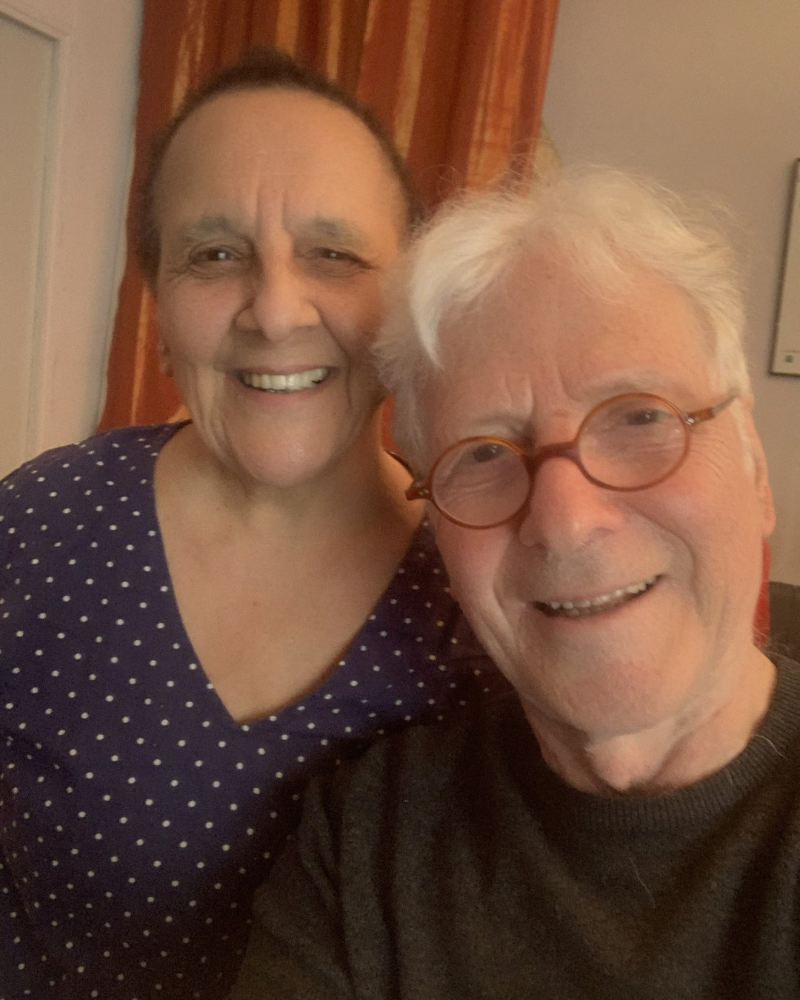

Josette Kalifa
UNE SAISON
EN MOUVEMENT
De janvier à Avignon 2026
— feuilletez
01 / 07
FormationJanvier — Mars 2026
La formation en e-learning est un succès. Par session de trois mois avec cinq personnes maximum, nous nous retrouvons une heure par semaine pour un atelier pédagogique en visio.
Témoignage de Sandrine02 / 07
Documentaire & Scène2024 — 2025
Depuis 2024 nous vivons une aventure incroyable avec dix artistes tous singuliers et remarquables. Je n’aurai jamais imaginé intégrer un spectacle orchestré par la chorégraphe Jany Jérémie.

03 / 07
Vie11 mars 2026
Le 11 mars, j’ai changé d’adresse. Déplacer ses murs, c’est aussi déplacer quelque chose en soi. Et avec ce nouveau chez-moi — une terrasse de 16m², vue sur les toits de Paris.

04 / 07
VoyagePrintemps 2026
Un détour par la Hollande pour retrouver Mathew et Gérard, le papa d’adoption. Plus de 40 ans que nous nous connaissons. Nos liens sont des liens familiaux.


05 / 07
Littérature28 mai 2026
Françoise Pelissier, « accoucheuse d’écriture », nous a ouvert son salon. J’ai lu trois extraits de La Réparation et présenté deux scènes du spectacle.
06 / 07
Livre2026
Le livre qui est à l’origine de tout. Une nouvelle couverture pour une nouvelle vie — et pour accompagner le spectacle à Avignon.
📖 Commander
07 / 07
CréationMai — Juin 2026
Avec Jean Sommer, l’auteur, nous nous retrouvons trois heures toutes les semaines depuis le mois de mai. Sa direction est exigeante : dire sans surjeu, laisser le temps aux mots.
✦ Livret du spectacleFestival d’Avignon · du 4 au 25 juillet 2026
Atypik Théâtre · 19h55
Je fais un donVotre soutien aide à financer les impressions, les déplacements, la communication.